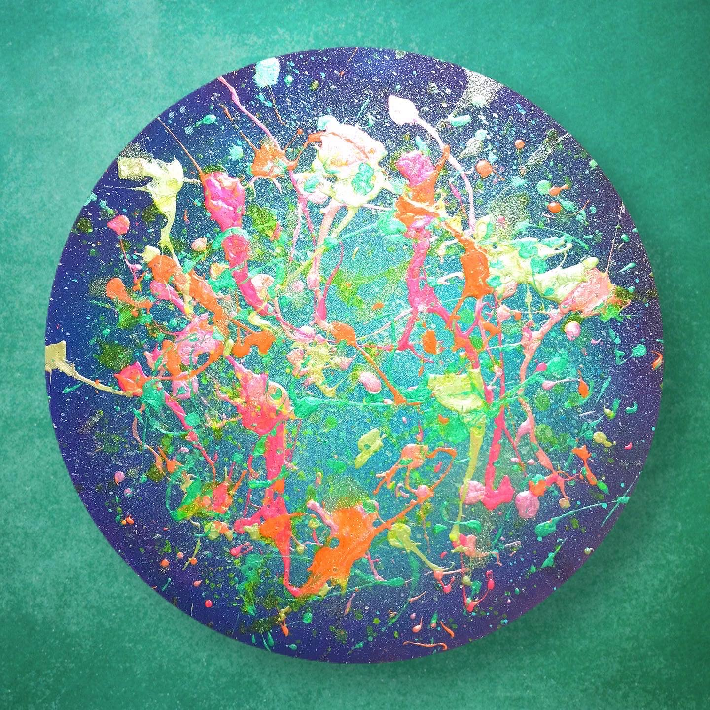
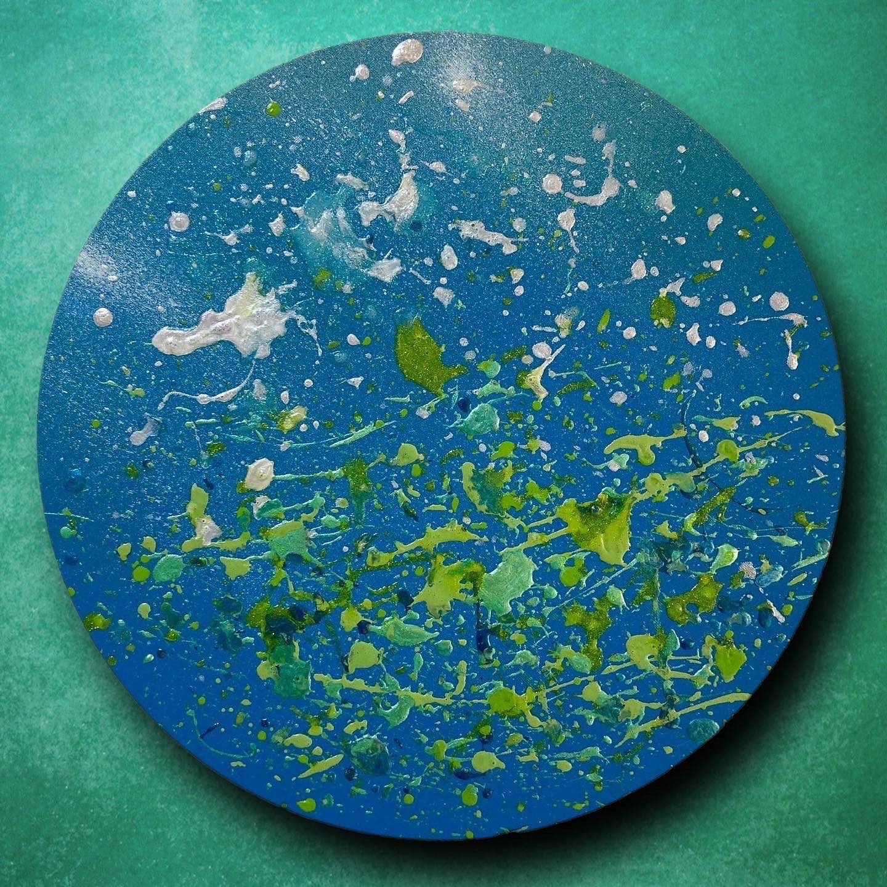
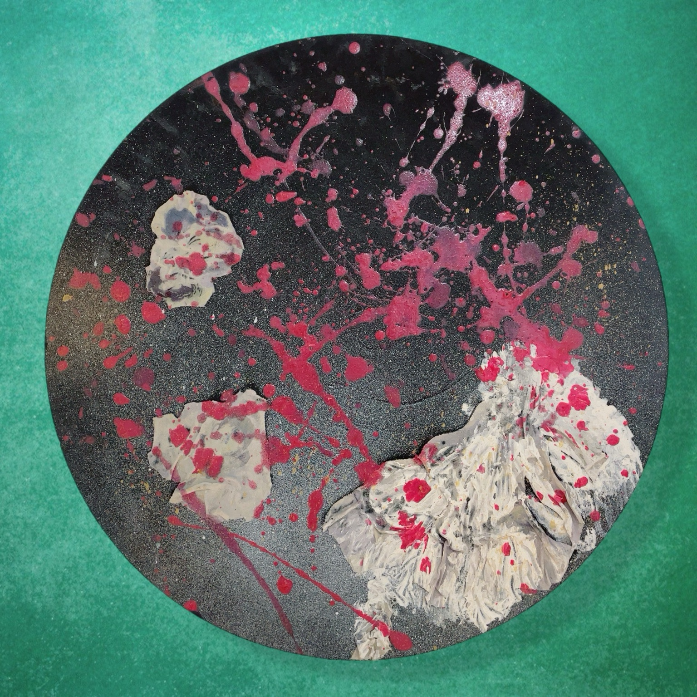
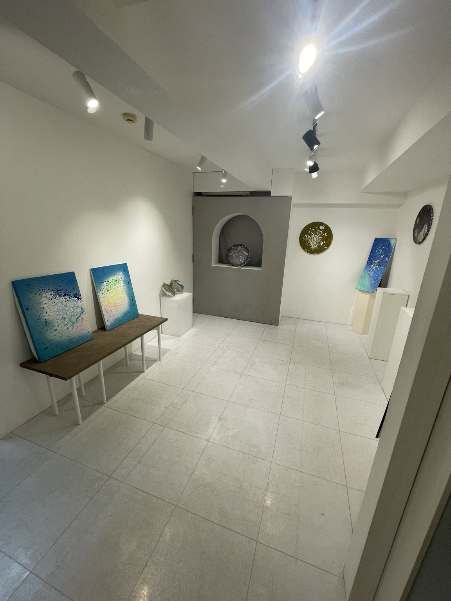
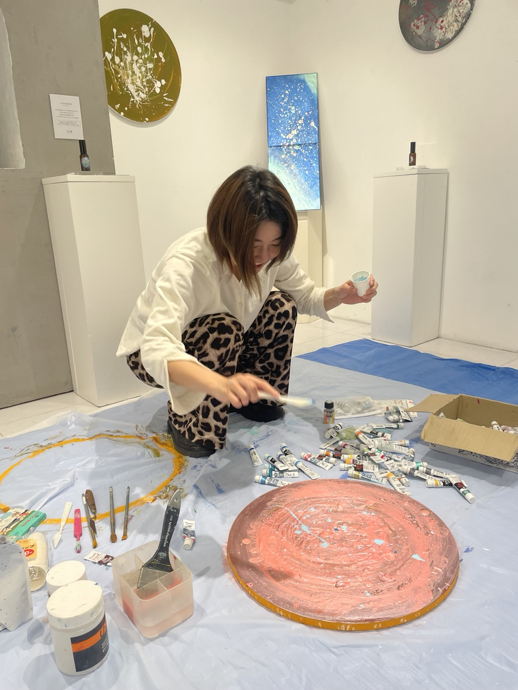
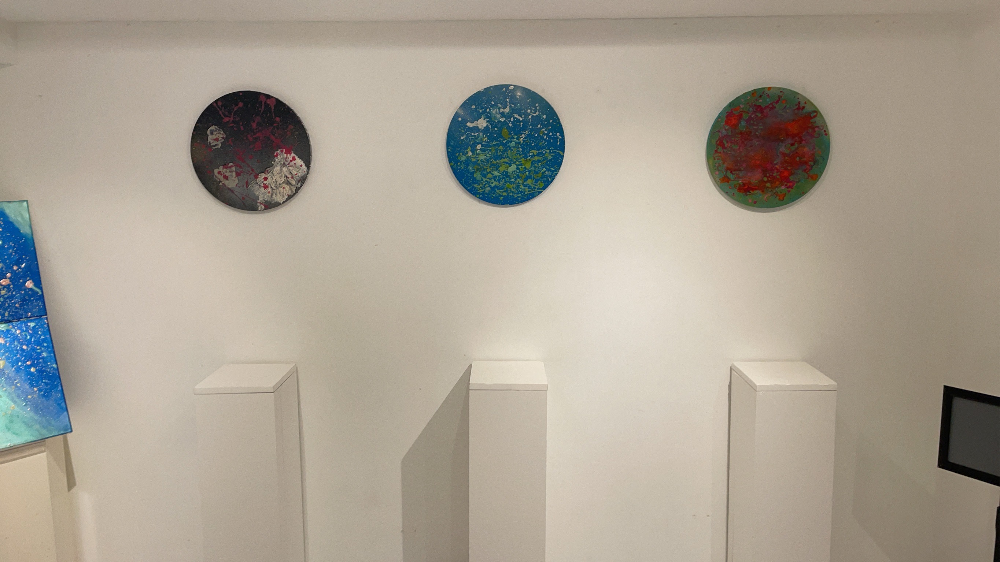
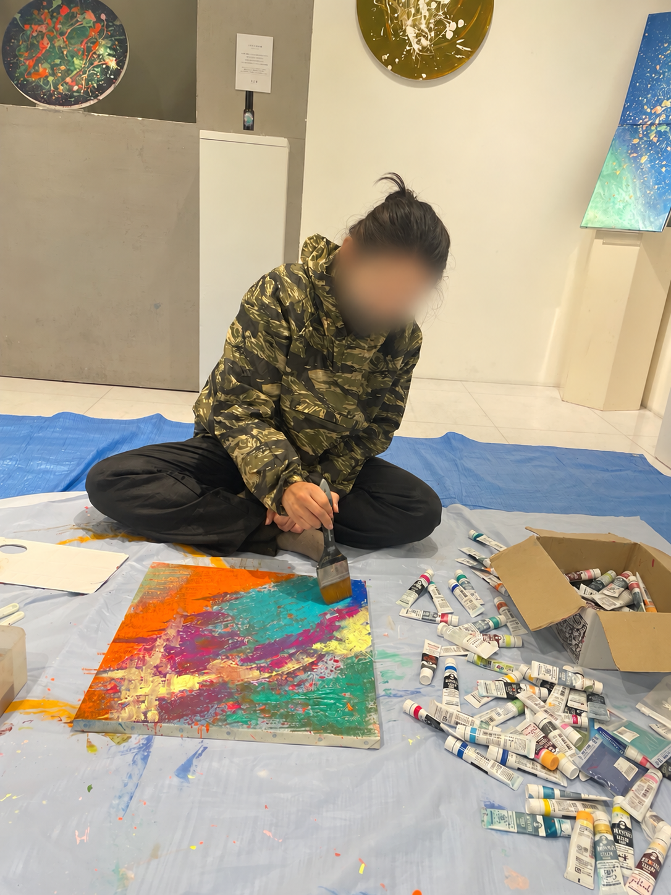
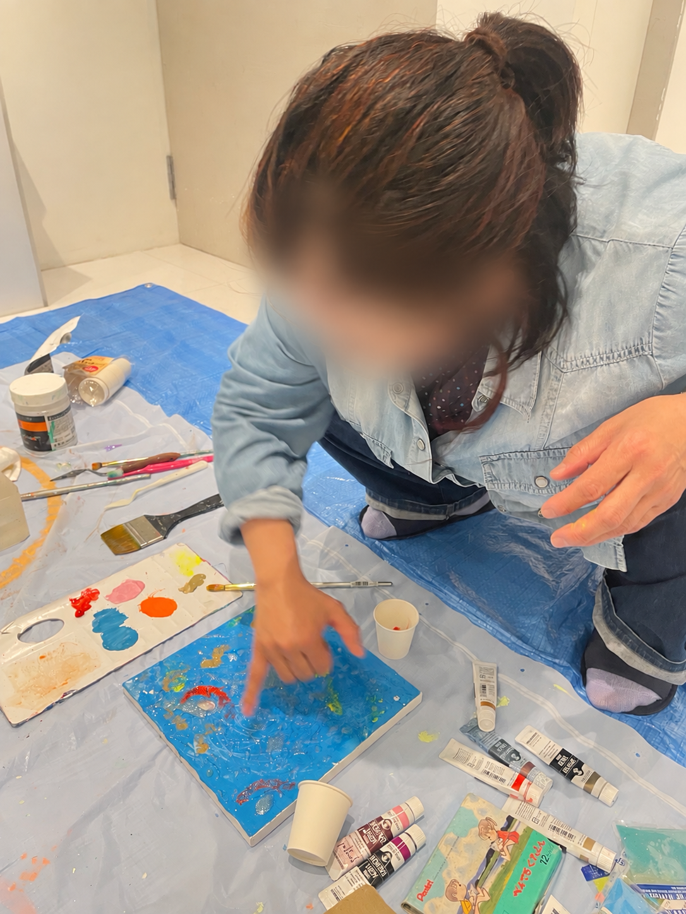
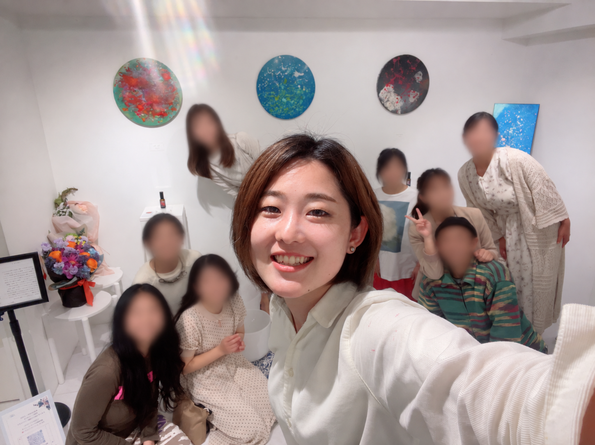
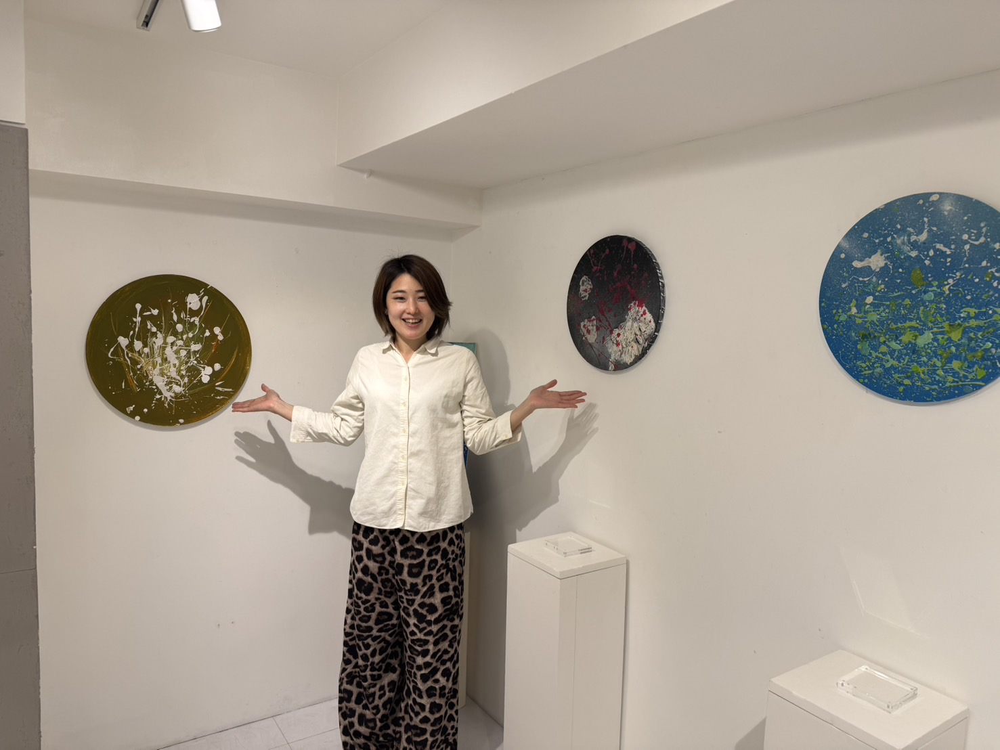

01 / WORKS
Selected Works
The Earth

Fresh Green

Darkness
02 / EXHIBITION · 2026
Still Here
存在のままに
作品の展示、ライブペインティング、そして来場者が絵に描き加える参加型の制作。絵を通して、人と出会う時間。



一緒に、描く。




03 / ABOUT
MAMI
絵、音楽、空間。
そのときに生まれる感覚を、かたちに。
作品が、見る人にとって
「私はどう感じる？」と
自分へ問いかけるきっかけになれば嬉しい。
04 / CONTACT
Let’s create together.
作品や展示、お仕事のご相談は
InstagramのDMからご連絡ください。
@wakeupart_369